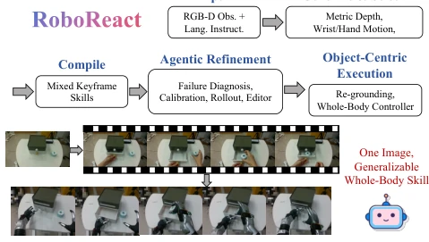
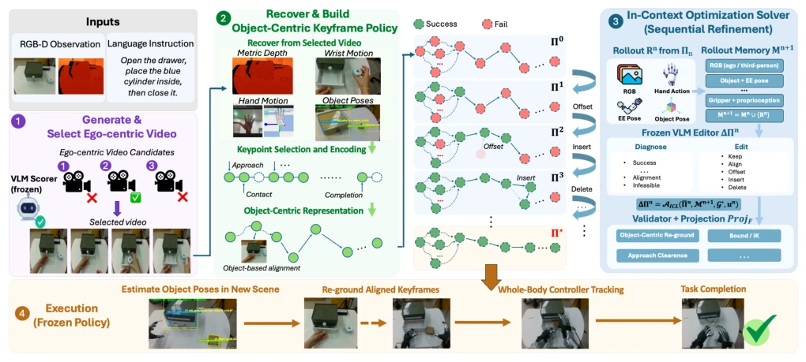
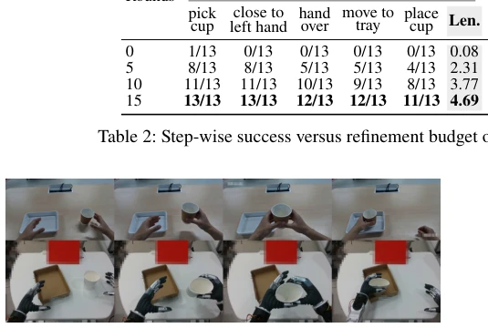
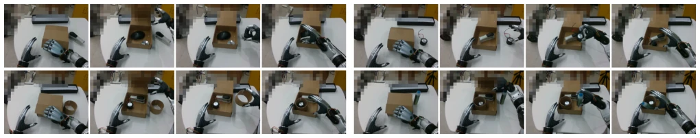

Generative video has become the new favorite, but making robots truly move remains somewhat metaphysical. RoboReact attempts to use VLM as a "referee" to correct geometric biases in generated videos; this approach is quite clever, avoiding end-to-end black boxes. However, Table 5 exposes a critical flaw: when the video generation model performs poorly, skill quality plummets directly, indicating that "garbage in" still cannot escape "garbage out." Although freezing VLM at test time is fast, can it really rely on pre-trained skills to withstand unknown perturbations? Overall, it is a feasible path, but not yet at the "general" stage. Its characteristic of relying on upstream model capabilities makes it more like a "skill compiler" than an "agent".
研究动机Motivation
人形机器人技能获取成本太高，传统遥操作 (Ze et al. 2025) 或 RL 微调 (Ankile et al. 2025) 既费钱又费人。现有视频生成方法 (Du et al. 2023) 虽能合成数据，但缺乏物理可执行性，且多限于固定基座 (YOTO Zhou et al. 2025)。如何从非度量的生成视频中提取可迁移的全身操作技能，填补想象与现实的鸿沟，是核心痛点。特别是全身协调与移动操作（loco-manipulation）在现有工作中几乎空白。
The cost of skill acquisition for humanoid robots is too high; traditional teleoperation (Ze et al. 2025) or RL fine-tuning (Ankile et al. 2025) are both costly and labor-intensive. Existing video generation methods (Du et al. 2023) can synthesize data, but lack physical executability and are mostly limited to fixed bases (YOTO Zhou et al. 2025). How to extract transferable whole-body manipulation skills from non-metric generative videos to bridge the gap between imagination and reality is the core pain point. Especially, whole-body coordination and loco-manipulation are almost blank in existing work.
The framework is divided into two stages: skill distillation and online execution. First, generate human operation videos based on single-frame RGB-D and instructions, extracting keyframes through depth-aware 3D reconstruction to preserve hand-object interaction geometry. Next, redirect human motion to high-DoF humanoid platforms. The core innovation lies in the "context optimization solver": utilizing frozen VLM as a proxy, recording failure evidence through calibrated rollout, and iteratively proposing structured edits (e.g., offset, insert), rather than gradient updates. Finally, in the execution stage, skills are frozen, adapting to new poses only through online object center re-grounding, ensuring whole-body controller coordinated output. This method decouples VLM reasoning with deterministic geometric constraints, preserving semantic understanding while ensuring physical feasibility.
Tested 4 long-horizon tasks (e.g., pouring water, opening box) on UniTree G1. Compared with ReKep (Huang et al. 2024) and YOTO (Zhou et al. 2025). RoboReact average success rate 81.3%, close to real video prior. Ablation shows VLM editor capability impact is significant (Table 3), video generation quality (Table 5) and third-person camera (Table 4) are crucial for long-horizon reasoning. Perturbation test (Table 6) proves frozen execution stack remains robust under pose deviation, but upstream pose errors will cascade and affect.
其他图片Other Figures

Figure 1: RoboReact distills a generated interaction video into an object-centric whole-body manipulation skill.

Figure 2: Overview of RoboReact. A VLM-selected generated video is compiled into an object-centric keyframe policy, refined from calibration rollouts, and executed through online object-pose re-grounding without test-time VLM access.

Figure 4: The required RGB-D source is not tied to a fixed acquisition setup.

Figure 5: Each four-frame sequence shows contact with the lid, the fully opened box after releasing the lid, a stable object grasp, and release of the object inside the box.